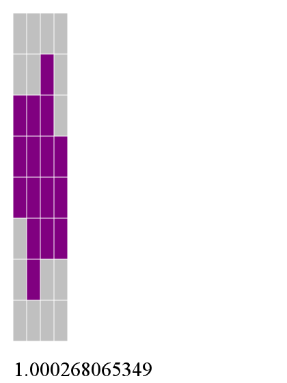

kwantam.github.io
Snippets
or, my irregularly updated code blog
- 2011 June 17
- A quine in Scheme derived via the applicative-order Y-combinator:
{% highlight scheme %}
((eval '(lambda (x) (pp `((eval '(lambda (x) (pp ,x))) ',x))))
'`((eval '(lambda (x) (pp ,x))) ',x))
{% endhighlight %}
- 2013 March 10
- A meditation on efficiently detecting illegal states in twisted-ring FSM state vectors. Literate Haskell is a beautiful thing.
- 2013 April 21
- Uncurrying functions for mad(wo)men, or, an entertaining line of thought about something almost entirely pointless.
- 2013 May 2
- BeagleBoard Black Notes, Part 1 — some notes I wrote while playing with my new BeagleBoard Black for the first time. Debian Wheezy installation ; setting up the USB gadgets ; installing a few useful packages.
- 2013 May 4
- BeagleBoard Black Notes, Part 2 — USB network bridging; working with the PRUSS; updating the eMMC's Ångstrom image from Debian.
- 2014 June 23
- Cross Bootstrapping Rust — The Rust build system doesn't presently support bootstrapping a compiler to a different architecture, but with a few modifications we can get it there. This is useful if you're building for a slow device, or for one that doesn't yet have an official stage0 image.
Projects
lviv is a hybrid functional/stack programming language. Here's some example code:
{% highlight scheme %}
; qsort.lviv
; quicksort implemented in lviv
; filter2
; given a predicate in slot 0 and a list in slot 1
; filter the list into two lists, one for which the
; predicate is true and one for which it is false
( (*tList *fList) ; if the list is null, return the true and false lists
(*lList uncons (*tList cons *fList) ; otherwise, take the first element, cons it to tlist
(*fList cons *tList swap) ; or flist as appropriate
3 pick *pred apply if ; (test whether to cons to tList or fList)
3 roll ***pred eval *filt2Hlp) ; then get the stack back in order and call again
*lList null? if ) ; (test whether list is null)
(*tList *fList *lList *pred) lambda *filt2Hlp define
( () () *lList **pred eval *filt2Hlp ) ; call the helper function with empty tList and fList
(*lList *pred) lambda *filt2 define
; qsort: use the first element of the list as the pivot
; filter the list and qsort the resulting lists
( (*lList) ; if it's 0 or 1 elm long, just return it
(*lList uncons dup 3 unroll ; otherwise, get the next pivot, save off the pivot
(***n <) cons (***n) lambda filt2 ; filter the list into greater and lesser lists
*qsort swap ; sort the first part
*qsort 3 roll :cons ; sort the second part, then replace the pivot
append ; append them, and we are sorted
)
(#t) (*lList cdr null?) *lList null? if if )
(*lList) lambda *qsort define
{% endhighlight %}
A Tetris clone in Haskell using Cairo and Gtk2Hs. In 2-player mode, you can screw with your opponent by switching their next piece for a random one.

A ballistic calculator for Maemo5 using the GNU Ballistics Library.
Generate a series-parallel network of unit-sized resistors that synthesize an arbitrary resistance value.

Now there are two versions of this code: the original one in Perl, and a new implementation in Haskell that can search for a more optimal implementation and render the result as an SVG, like so:

See README.md for more info.
Generate optimal 2d resistor pack layout for N:1/N ratioed resistors in the presence of linear gradients in X and Y.

An FPGA-based PCIe accelerator for batched modular multiexponentiation.
Some rudimentary code to use a PIC16F628a to control a heater and pump for Sous-vide.
The game of Set. Includes a rudimentary CGI interface.
A minimal audio player for Android. Primarily for playing m3u files that include http URLs.
A simple password manager application for Android.
A simple, usable HIIT workout timer.
What else would you do with a 120 V meter?
A simple, single-digit NIXIE clock.
If one NIXIE is good, two must be better!
An electrostatic CRT vector display clock. High voltages within!
An IV-18 vacuum fluorescent display clock. This design inspired LadyAda's Ice Tube kit.
Come for the humor, stay for the delightful 555-based power converter.
Quick writeup of a vacuum tube–based headphone amplfier with op-amp sensibilities.
A solid-state headphone amplifier with a fun "unfolded diff pair" input and a DC servo.